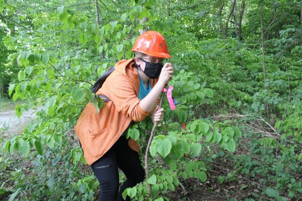

Education History
Geographic Information Systems-Application Specialist, 2021-Present
Sir Sandford Fleming College, School of Environmental and Natural Resource Sciences
Ecosystem Management Technician Program, 2019-2021
Sir Sandford Fleming College, School of Environmental and Natural Resource Sciences
Attended over the summer during strict COVID protocols (pictured right)
Honours BA (Cinema Studies Specialist), 2013-2018
University of Toronto, Innis College
Also included a summer program at Oxford University in England, 2016
Professional Development
- AODA Customer Service Standard Training, 2020
- ORCKA Level 2, 2019
- G Driver's License (Clean driving record)
- Workplace Hazardous Materials Information System Training
- Pleasure Craft Operator Card
- Smart Serve Certification